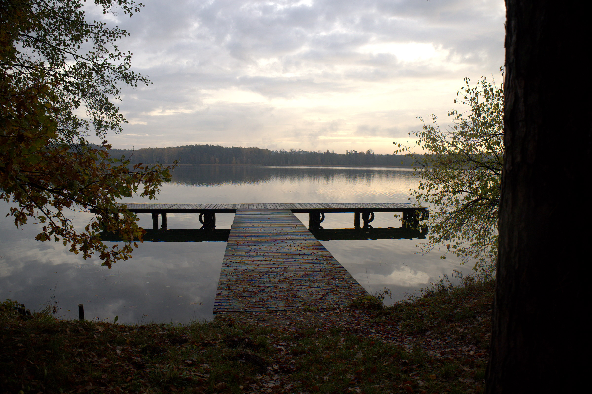

01
Na ryby
Wielkie Partęczyny od lat przyciągają wędkarzy. Rozległa powierzchnia jeziora, liczne zatoki i urozmaicona linia brzegowa dają wiele możliwości zarówno osobom łowiącym z brzegu, jak i tym, które wolą wypłynąć dalej.
Wędkarski dzień często zaczyna się jeszcze przed wschodem słońca. Nad wodą jest chłodno, wokół panuje cisza, a jezioro dopiero powoli budzi się razem z pierwszym światłem. Kilka godzin później wygląda już zupełnie inaczej.